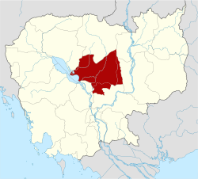

ភូមិសាស្ត្រ និងទីតាំង
កំពង់ធំ
ជាខេត្តដែលមានទីតាំងនៅកណ្តាលនៃប្រទេស។ វាចែករំលែកព្រំដែន
ជាមួយខេត្តសៀមរាប ខាងលិចឆៀងខាងជើង ព្រះវិហារ ខាងជើងស្ទឹង ត្រែង ឦសាន
ក្រចេះ ខាងកើត កំពង់ចាម និង កំពង់ឆ្នាំងទៅខាងត្បូង
និងបឹងទន្លេសាបទៅខាងលិច។ ទីរួមខេត្តគឺ ស្ទឹងសែន
ដែលមានទីតាំងនៅតាមដងស្ទឹងសែន ទន្លេ។
សេដ្ឋកិច្ច
ភាគច្រើននៃខេត្តកំពង់ធំ
ស្ថិតនៅលើតំបន់ទំនាបលិចទឹកនៃ បឹងទន្លេសាប ។ នៅឆ្នាំ ២០០៣-២០០៤
ជាអ្នកផលិតត្រីព្រៃដ៏សំខាន់ (១៨.៨០០ តោន) និងជាអ្នកផលិតត្រីធំជាងគេទី
៤ តាមរយៈ វារីវប្បកម្ម នៅកម្ពុជា (១៨០០ តោន) ។
ការចិញ្ចឹមត្រីភាគច្រើនធ្វើឡើងដោយការផលិតតាមផ្ទះ
ជាមួយនឹងផ្នែកដែលរីកលូតលាស់សម្រាប់វារីវប្បកម្មវាលស្រែ។
កំពង់ធំក៏ជាប្រទេសផលិត គ្រាប់ស្វាយចន្ទី ធំជាងគេមួយ
ក្នុងប្រទេសកម្ពុជា ដែលមានផ្ទៃដីចំនួន 6,371
ហិកតាស្ថិតនៅក្រោមការផលិតក្នុងឆ្នាំ 2003-2004។
ប្រវត្តិសាស្ត្រ
ឈ្មោះខេត្តមុនគឺ
កំពង់ពោធិ៍ធំ ('កំពង់ផែ', 'ក្រុងពស់')។
យោងតាមរឿងព្រេងក្នុងស្រុកបានឱ្យដឹងថា នៅមាត់បឹងមួយក្បែរមាត់ទន្លេសែន
ពស់ធំមួយគូបានរស់នៅក្នុងរូងភ្នំក្បែរនោះ។ រាល់ថ្ងៃបុណ្យពុទ្ធសាសនា
សត្វពស់នឹងបង្ហាញមុខអ្នកនៅក្បែរនោះ
ដែលពេលនោះចាប់ផ្ដើមហៅតំបន់នោះថា កំពង់ពោធិ៍ធំ ។
ទីបំផុតសត្វពស់នោះក៏បាត់ទៅហើយ ហើយឈ្មោះក៏ខ្លីថា
កំពង់ធំ ។ ក្នុង សម័យ អាណានិគមកម្ពុជា
បារាំងបានបែងចែកទឹកដីកម្ពុជាជាខេត្ត
ហើយដាក់ឈ្មោះភាគច្រើនតាមឈ្មោះប្រជាប្រិយក្នុងស្រុកសម្រាប់តំបន់រៀងៗខ្លួន។
កំពង់ធំជារាជធានីដ៏មានឥទ្ធិពលមួយនៅអាស៊ីអាគ្នេយ៍ក្នុង សម័យ ហ្វូណន។
ប្រាសាទសំបូរព្រៃគុក មានតាំងពី សម័យ ចេនឡា ស្ថិតនៅក្នុងខេត្តកំពង់ធំ។
ប្រាសាទសំបូរព្រៃគុក
ដែលជាសម្បត្តិបេតិកភណ្ឌពិភពលោករបស់អង្គការយូណេស្កូ
មានប្រាសាទឥដ្ឋដែលត្រូវបានថែរក្សាយ៉ាងល្អជាង 100 តាំងពីសតវត្សទី 7
ដែលបង្ហាញពីភាពអស្ចារ្យខាងស្ថាបត្យកម្មនៃព្រះរាជាណាចក្រចេនឡា។